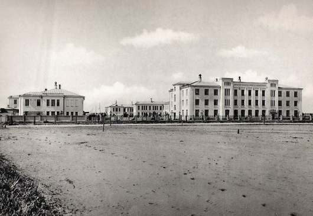

Известный меценат и промышленник, почётный гражданин Москвы, купец первой гильдии Козьма Терентьевич Солдатёнков (1818-1901), один из богатейших людей своего сословия, оставил духовное завещание. В нем он распорядился выделить часть своих средств, порядка 2 миллионов рублей, на постройку в Москве "новой бесплатной больницы для всех, без различия званий, сословий и религий". Стараниями исполнителей завещания, среди которых были известные москвичи М. Ф. Морозова, А. Л. Кноп, Ф. С. Рахманов, сумма выросла. И в 1903 году деньги поступили в распоряжение Московского городского управления, которое предоставило под строительство 10 десятин земли на Ходынском поле.
В апреле 1908 г. была произведена закладка больницы, а 23 декабря 1910 г. состоялось её официальное открытие. Тогда же Московская городская Дума постановила присвоить больнице имя К.Т. Солдатёнкова. Инициатором основания больницы был профессор Фёдор Александрович Гетье, который впоследствии стал её главным врачом. В те времена больница была рассчитана на 505 коек и состояла из 12 лечебных корпусов, оснащённых современным по тем временам оборудованием.
Сергей Петрович Боткин – выдающийся русский врач, общественный деятель, основоположник русской клинической медицины. Он родился (5) 17 сентября 1832 года в Москве, в купеческой семье. В 1855 году окончил медицинский факультет Московского университета. Тогда же участвовал в Крымской кампании – отправился с санитарным отрядом в Крым, где ему посчастливилось работать под руководством Н.И. Пирогова, великого хирурга.
Затем Сергей Петрович работал в Санкт-Петербурге, в клинике терапии Медико-хирургической академии. В 1861 году 29-летний ученый получил звание профессора и почти три десятилетия руководил клиникой академии. Для изучения проблем научной медицины и физиологии он в 1860-61 годах создал первую в России экспериментальную лабораторию при своей клинике, где проводились анализы, изучалось воздействие лекарств на организм. В 1861 году при своей клинике он открыл первую бесплатную амбулаторию, благодаря его настойчивости в Петербурге и других городах впервые появились бесплатные больницы для бедняков. В 1873 году Боткин стал лейб-медиком. Во время русско-турецкой войны (1877-1878) он добивался улучшения условий жизни солдат и работы госпиталей. В числе пациентов Боткина были Н.А. Некрасов, Ф.И. Тютчев, М.Е. Салтыков-Щедрин. Скончался великий русский врач (12)24 декабря 1889 года в Ментоне (Франция).
Доктор медицинских наук, профессор, член-корреспондент РАН.
Главный хирург Департамента здравоохранения Москвы.
Член президиума Российского общества хирургов.
Член правления Московского общества хирургов.
Заведующий кафедрой хирургии РМАНПО (Российской медицинской академии непрерывного профессионального образования).
Заслуженный врач Российской Федерации (2002).
Лауреат Премии Правительства РФ в области науки и техники (2021)
Лауреат премии Правительства Москвы в области медицины (2004, 2018).
Медаль «За заслуги перед отечественным здравоохранением» (2008).
Медаль ордена «За заслуги перед Отечеством» II степени (2010).
Заслуженный врач города Москвы (2016).
Орден Дружбы (2016).
Медаль имени А. В. Вишневского (2017).
Медаль имени С. С. Юдина (2018).
Орден Пирогова (2020).
Медаль «Академик В.И. Шумаков» (2021)
1984-1991 гг. - врач-хирург.
1991-2001 гг. – руководитель Кузбасского областного гепатологического центра.
2001-2010 гг. – заместитель главного врача по хирургии ГБУЗ ГКБ им. С.П. Боткина ДЗМ.
2010-2013 гг. – главный врач ГБУЗ ГКБ № 1 им Н.И. Пирогова ДЗМ.
С октября 2013 года – главный врач ГБУЗ ГКБ им. С.П. Боткина ДЗМ.
Проходил стажировки по хирургии печени, желчных путей и поджелудочной железы в Мюнхене (Германия), Бостоне (США), Риме (Италия), Токио (Япония), Сеуле (Южная Корея).
Доктор медицинских наук, профессор, член-корреспондент РАН.
Доктор медицинских наук. Хирург, онколог. Профессор кафедры хирургии РМАНПО. В 1997 году с отличием окончил Российский университет дружбы народов по специальности «лечебное дело». В 2012 году с отличием окончил факультет государственного и муниципального управления МГУ им. М.В. Ломоносова.
Стаж практической работы – с 1999 г.
С 1999 г. работает в ГБУЗ ГКБ им. С.П. Боткина ДЗМ.
С 2006 г. - заведующий отделением абдоминальной хирургии.
С 2015 г. назначен заместителем главного врача по онкологии ГБУЗ ГКБ им. С.П. Боткина ДЗМ
С 2019 г. назначен заместителем главного врача по медицинской части ГБУЗ ГКБ им. С.П. Боткина ДЗМ.
Специализируется в хирургии рака желудка, толстой и прямой кишки как лапароскопическим, так и традиционным доступом.
Почётный медицинский работник города Москвы (217).
Проходил обучение за рубежом: в Бельгии, Южной Корее, Великобритании, Германии, Франции.
Занимается активной научной и педагогической деятельностью, автор 38 научных публикаций и 2 патентов. Награжден Почетной грамотой Департамента здравоохранения города Москвы (2010 г.), является победителем фестиваля «Формула жизни» в номинации «Врач-хирург года» (2014 г.)
Награжден Почетным знаком "Заслуженный врач города Москвы"
Доктор медицинских наук, профессор кафедры хирургии РМАНПО
Врач-хирург высшей квалификационной категории, врач-онколог
Стаж работы хирургом – с 1990 года. Работал врачом-хирургом в отделении хирургии печени и поджелудочной железы в Кузбасском областном гепатологическом центре, в 2001 г. - возглавил его
В 2001 г. защитил диссертацию на звание к.м.н.
В 2007 г. назначен заведующим отделением хирургии печени и поджелудочной железы в ГБУЗ ГКБ им. С.П. Боткина ДЗМ
В 2011 г. - заведующий отделением хирургии печени и поджелудочной железы ГКБ № 1 им. Н.И. Пирогова, позднее - заместитель главного врача по хирургии
С октября 2013 г. назначен заместителем главного врача по хирургии ГБУЗ ГКБ им. С.П. Боткина ДЗМ
Лауреат Премии Правительства РФ в области науки и техники (2021)
Лауреат Кузбасского областного конкурса «Лучший врач» в номинации «Лучший хирург» (2001)
Имеет Благодарность Президента РФ (2016)
Лауреат Премии Правительства Москвы в области медицины (2018)
Заслуженный врач Российской Федерации (2019)
Награжден Медалью за заслуги перед отечественным здравоохранением МЗ РФ (2020)
Проходил стажировки по хирургии печени, желчных протоков и поджелудочной железы в Мюнхене, Ганновере, Висбадене (Германия), Брюсселе (Бельгия) и Сеуле (Южная Корея)
Владеет навыками проведения лапароскопических и роботических операций высшей категории сложности
Занимается активной научной и педагогической деятельностью, является автором более 300 печатных работ (из них 103 статьи), 7 методических рекомендаций, 4 монографий, имеет 9 патентов на изобретения
Награжден почетной грамотой Минздрава России, имеет благодарности руководителя Департамента здравоохранения г. Москвы